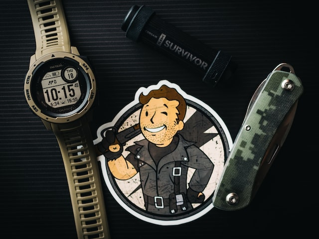

Välkommen till Amogus
Big iron
To the town of Agua Fria Rode a stranger one fine day Hardly spoke to folks around him Didn't have too much to say No one dared to ask his business No one dared to make a slip The stranger there among them Had a big iron on his hip Big iron on his hip
It was early in the morning When he rode into the town He came riding from the south side Slowly looking all around "He's an outlaw loose and running" Came the whisper from each lip "And he's here to do some business With the big iron on his hip" Big iron on his hip
In this town there lived an outlaw By the name of Texas Red Many men had tried to take him And that many men were dead He was vicious and a killer Though a youth of twenty-four And the notches on his pistol Numbered one and nineteen more One and nineteen more
Now the stranger started talking Made it plain to folks around Was an Arizona Ranger Wouldn't be too long in town He came here to take an outlaw Back alive, or maybe dead And he said it didn't matter He was after Texas Red After Texas Red
Wasn't long before the story Was relayed to Texas Red But the outlaw didn't worry Men that tried before were dead Twenty men had tried to take him Twenty men had made a slip Twenty-one would be the Ranger With the big iron on his hip Big iron on his hip
The morning passed so quickly It was time for them to meet It was twenty past eleven When they walked out in the street Folks were watching from the windows Everybody held their breath They knew this handsome Ranger Was about to meet his death 'Bout to meet his death
There was forty feet between them When they stopped to make their play And the swiftness of the Ranger Is still talked about today Texas Red had not cleared leather 'Fore a bullet fairly ripped And the Ranger's aim was deadly With the big iron on his hip Big iron on his hip